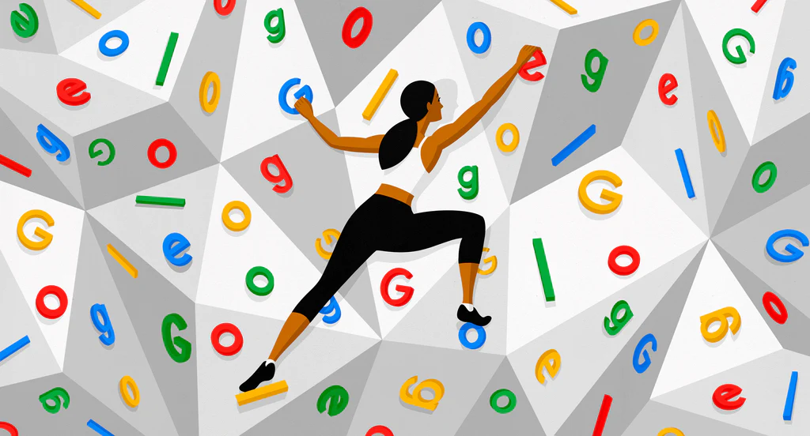
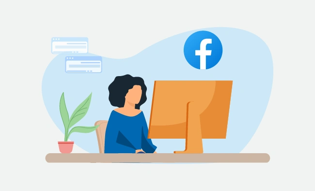

Search Engine Optimization
Search engine optimization (SEO) is the process of optimizing your website so that it ranks higher in search engine results pages (SERPs). This means that when people search for keywords related to your business, your website is more likely to appear at the top of the page.
SEO is important because it can help you attract more visitors to your website. When your website ranks higher in SERPs, more people are likely to see it and click on it. This can lead to more traffic, leads, and sales for your business.
Online Reputation Management
Online Reputation Management is the process of controlling what potential customers see when they search for your business online.
The web is full of opinions, and some of these can be negative. Social media allows anyone with an internet connection to say whatever they want about your business. Online Reputation Management gives you the control over what potential customers see when they search for your business.

Social Media Marketing
Social media marketing is a powerful tool that can help businesses of all sizes reach their target audience, promote their products and services, and generate leads and sales. However, with so many social media platforms available, it can be difficult to know which ones are right for your business.
One of the best ways to choose the right social media platforms for your business is to use analytics to identify where your target audience is most active. This information can help you narrow down your choices and focus your efforts on the platforms that are most likely to be effective for your business.